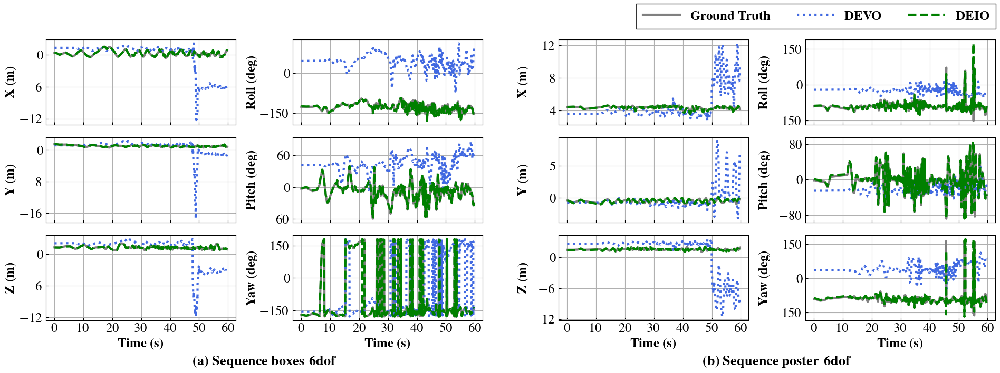
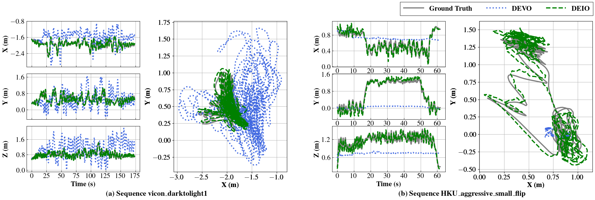
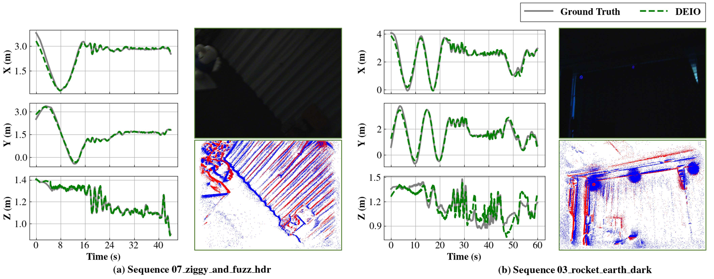
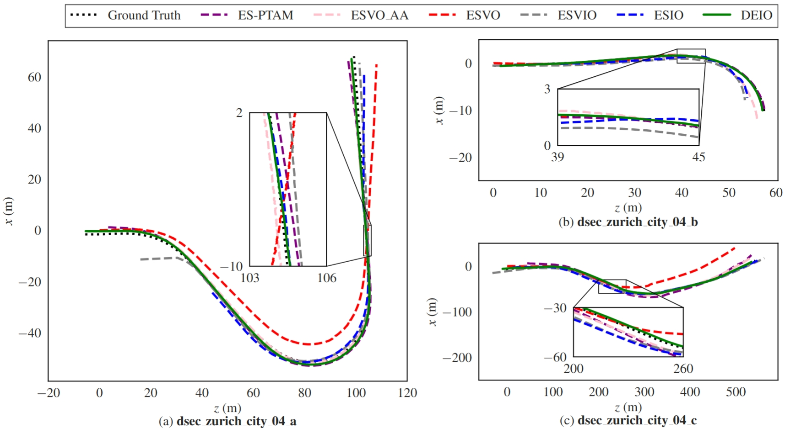

Abstract
Event cameras are bio-inspired, motion-activated sensors that demonstrate great potential in handling challenging situations, such as fast motion and high-dynamic range.
Despite their promise, existing event-based simultaneous localization and mapping (SLAM) approaches still face limited performance in real-world applications.
On the other hand, state-of-the-art SLAM approaches that incorporate deep neural networks show impressive robustness and applicability.
However, there is a lack of research on fusing learning-based event SLAM methods with IMU, which could be indispensable to push the event-based SLAM to large-scale, low-texture or complex scenarios.
In this paper, we propose DEIO, the first monocular deep event-inertial odometry framework, which combines learning-based method with traditional nonlinear graph-based optimization.
Specifically, we tightly integrate a trainable event-based differentiable bundle adjustment (e-DBA) with the IMU pre-integration in a patch-based co-visibility factor graph that employs keyframe-based sliding window optimization.
Numerical Experiments in ten public challenge datasets demonstrate that our method can achieve superior performance compared with the image-based and event-based benchmarks.
Qualitative Evaluation
| indoor_forward_7 in UZH-FPV | Drone Flight in Dark Scene |
| dynamic_6dof in DAVIS240c | boxes_6dof in DAVIS240c |
| HKU_agg_small_flip in Stereo-HKU | HKU_agg_tran in Stereo-HKU |
| Vicon_dark1 in Mono-HKU | Dense_street_night_easy_a in ECMD |
Qualitative Comparison Against GT

Comparison of the estimated position (X, Y, Z) and orientation (Roll, Pitch, Yaw) results of our DEIO with DEVO in the sequence of (a) boxes_6dof and (b) poster_6dof from the DAVIS240c dataset.
The DEIO efficiently converts scale ambiguity and aligns closely with the ground truth trajectory.

Comparison of the estimated trajectories (in X, Y, Z, and XY-plane) with DEVO in the Mono & Stereo HKU dataset.
The DEIO seamlessly addresses scale ambiguity and demonstrates precise alignment with the ground truth trajectory.
In contrast, the baseline estimates exhibit significant scale discrepancies:
(a) The baseline trajectory suffers from drift and an overestimated scale.
(b) The baseline trajectory shows an underestimated scale.

The estimated trajectories of our DEIO against the GT in the sequence of ziggy_hdr and rocket_dark from the EDS dataset.
The image view (visualization-only) demonstrates the lack of perceptible information under low-light conditions, while the event view, though perceptible, remains susceptible to interference from the infrared light of the motion capture system.
Thanks to our robust learning-based event data association, the trajectories estimated by DEIO align remarkably closely with the GT.


Visualization of estimated trajectories in the DSEC dataset.
Despite using a monocular setup, our DEIO results align more closely with the ground truth compared to other methods, which utilize a stereo setup.
Evaluation in Night Driving Scenarios
Driving scenarios pose challenges for event-based state estimation, especially at nighttime, where rampant flickering light (e.g., from LED signs) generates an overwhelming number of noisy events. Additionally, the movement of vehicles, such as sharp turns, sudden stops, and other abrupt movements, can further complicate the event-based estimator. In this section, we select the Dense_street_night_easy_a sequences of the ECMD dataset, which feature numerous flashing lights from vehicles, street signs, buildings, and moving vehicles, making event-based SLAM more difficult. This dataset is recorded with two pairs of stereo event cameras (640 X 480 and 346 X 260) on a car driven through various road conditions such as streets, highways, roads, and tunnels in Hong Kong. Our DEIO runs on the event from the DAVIS346 and the IMU sensor, while the image frame output of the DAVIS346 is only used for illustration purposes. The following figure shows a small drift with a 4.7 m error of our estimated trajectory on the 620 m drive. To the best of our knowledge, we present the first results on pose tracking for night driving scenarios using event and IMU odometry. The earliest attempt in this area is ESVIO, which utilizes a combination of stereo events, stereo images, and IMU data, whereas DEIO operates with a monocular setup.
Evaluation in Dark Quadrotor-Flight
We evaluate our DEIO in a dark quadrotor flight experiment. The quadrotor is commanded to track a circle pattern with 1.5 m in radius and 1.8 m in height. The illuminance in the environment is quite low, resulting in minimal visual information captured by the onboard camera. The total length of the trajectory is 60.7 m, with an MPE of 0.15 and an average pose tracking error of 9 cm. % We further illustrate the estimated trajectories (translation and rotation) of our DEIO against the ground truth, as well as their corresponding errors. The translation errors in the X, Y, and Z dimensions are all within 0.5 m, while the rotation errors of the Roll and Pitch dimensions are within 60, and the one in the Yaw dimension is within 30. To the best of our knowledge, this is also the first implementation of monocular event-inertial odometry for pose tracking in dark flight environments, while the previous works rely on the image-aided event-IMU estimators.